Tasks on HTML/CSS in codecademy
Course on basic JS in Udemy
Student of BSUIR, Faculty of Computer Aided Design, engineer-electronic-programmer (2018 - now)
My goal is to become professional Front-end/JavaScript developer
to create intuitive, qualitative, and fast sites
HTML (HTML5)
CSS (CSS3)
Sass
Core JavaScript basics
Git basics
C++ basics
Finished 2 stages of the RSS 2019Q3
Passed 2 offline interviews with FrontEnd/JS developers from EPAM
Got a score of 9/10 for the second CoreJS interview
Now my rating is TOP 80 out of 400 for this course

